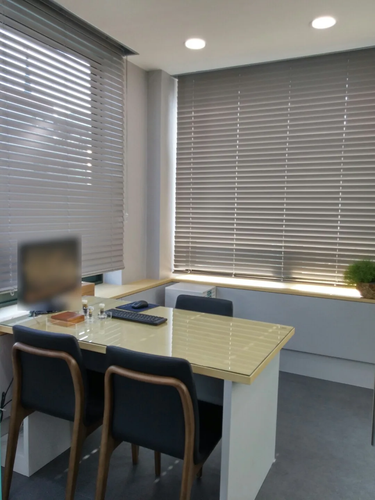

홈 › 치아교정
치아교정

교정은 덧니, 돌출, 반대교합, 주걱턱 같은 부정교합을 바로잡아 치열과 위아래 맞물림을 고르게 하는 치료입니다. 안중사과나무치과에서는 3층 교정센터에서 치과교정과 전문의 안선혜 대표원장이 진료합니다. 일반적인 치열 교정은 평균 1~2년 정도 걸리고, 시기와 방법은 교정 진단 뒤 정합니다.
한눈에 보기
- 진료 층
- 3층 교정센터
- 진료 의료진
- 안선혜 대표원장 · 치과교정과 전문의
- 교정 진료 시간
- 월 오전 10시 ~ 오후 6시 · 금 오후 2시 ~ 8시다른 요일 확인 중
- 기간
- 일반적인 치열 교정 평균 1~2년(나이·잇몸뼈 상태에 따라 다름)
- 장치
- 세라믹·레진 · 자가결찰 · 콤비네이션 · 설측 · 투명
- 비용
- 진찰 후 항목별로 미리 안내합니다
진료하는 의료진

이런 경우 교정 상담이 필요합니다
- 앞니나 입술이 돌출된 분
- 이가 삐뚤빼뚤하거나 겹쳐 난 분
- 치아 사이에 공간이 많은 분
- 어금니만 닿고 앞니는 닿지 않는 분
- 앞니가 거꾸로 물리는 분
- 웃을 때 잇몸이 많이 보이는 분
- 주걱턱인 분
- 무턱인 분
교정 시기 — 1차 · 2차 · 성인 교정
교정 시기와 방법, 기간은 부정교합의 원인과 상태, 심한 정도에 따라 사람마다 다릅니다. 성장기에는 정기적으로 관찰하며 치아와 턱이 제대로 자라는지 확인하고, 소아·청소년 교정은 1차와 2차로 나눕니다.
- 11차 교정 미취학 아동부터 영구치로 바뀌기 전 아이. 본격적인 치열 교정 전에 위아래 턱의 이상이나 영구치가 나오는 문제를 치료합니다.
- 22차 교정 보통 초등학교 5~6학년 전후, 영구치 교환이 절반 넘게 진행된 뒤에 시작해 전체 치열을 바로잡습니다.
- 3성인 교정 성장이 끝난 뒤 청소년기 후반부터 노년기까지. 1·2차로 나누지 않고 한 단계로 진행합니다.
교정 기간
교정은 치아와 턱뼈에 힘을 주어 치아가 뼈 속에서 움직이게 하고 뼈의 모양을 바꾸는 과정이라 시간이 걸립니다. 기간은 나이, 성별, 잇몸뼈 상태, 치아 뿌리 모양에 따라 다르며, 일반적인 치열 교정은 평균 1~2년 정도 걸립니다.
장치는 2~3회에 걸쳐 붙이고, 치료하는 동안 대부분 3~4주 간격으로 내원합니다.
3층 교정센터
교정 진료는 3층 교정센터에서 합니다. 3층에는 교정센터와 접수대, 대기실, 상담 공간, 진료실이 있어 진단 자료를 설명하고 치료 계획을 상의하는 일까지 한 층에서 이어집니다.

자주 묻는 질문
치아교정은 누가 진료하나요?
치과교정과 전문의 안선혜 대표원장이 3층 교정센터에서 진료합니다.
교정 치료는 얼마나 걸리나요?
일반적인 치열 교정은 평균 1~2년 정도 걸립니다. 나이와 잇몸뼈 상태, 치아 뿌리 모양에 따라 달라 교정 진단 뒤 안내합니다.
아이 교정은 언제 시작하나요?
1차 교정은 미취학 아동부터 영구치로 바뀌기 전 아이, 2차 교정은 영구치 교환이 절반 넘게 진행된 뒤 보통 초등학교 5~6학년 전후에 시작합니다. 만 6~7세경에는 검진으로 교정이 필요한지 진단을 받아 보시는 것이 좋습니다.
진료시간 · 오시는 길
031-683-7575경기도 평택시 안중읍 안중로 132
- 성심주차장을 이용하시면 주차권에 병원 도장을 찍어 드려 무료로 주차할 수 있습니다
(이면도로 주차는 유료). - 본원 뒤 주차장은 자리가 좁습니다. 이용하실 때는 주차권을 받아 가셔야 나가실 수 있습니다.
진료시간
- 월
- 전체
- 오전 9시 ~ 오후 6시교정과 오전 10시 ~ 오후 6시
- 화
- 전체
- 오전 9시 ~ 오후 8시
- 수
- 3층
- 오전 9시 ~ 오후 6시
- 목
- 2층
- 오전 9시 ~ 오후 8시
- 금
- 전체
- 오전 9시 ~ 오후 8시2층 오전 9시 ~ 오후 6시교정과 오후 2시 ~ 8시
- 토
- 전체
- 오전 9시 ~ 오후 2시점심시간 없음
- 점심
- 평일
- 오후 1시 ~ 2시
- 휴진
- 일요일 · 공휴일 휴진
교정은 3층 교정센터에서 진료합니다.